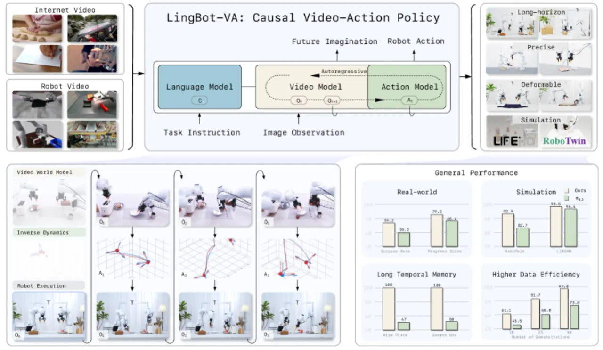
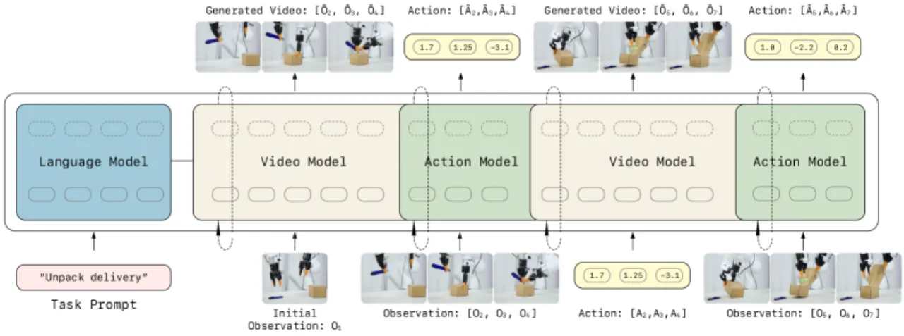
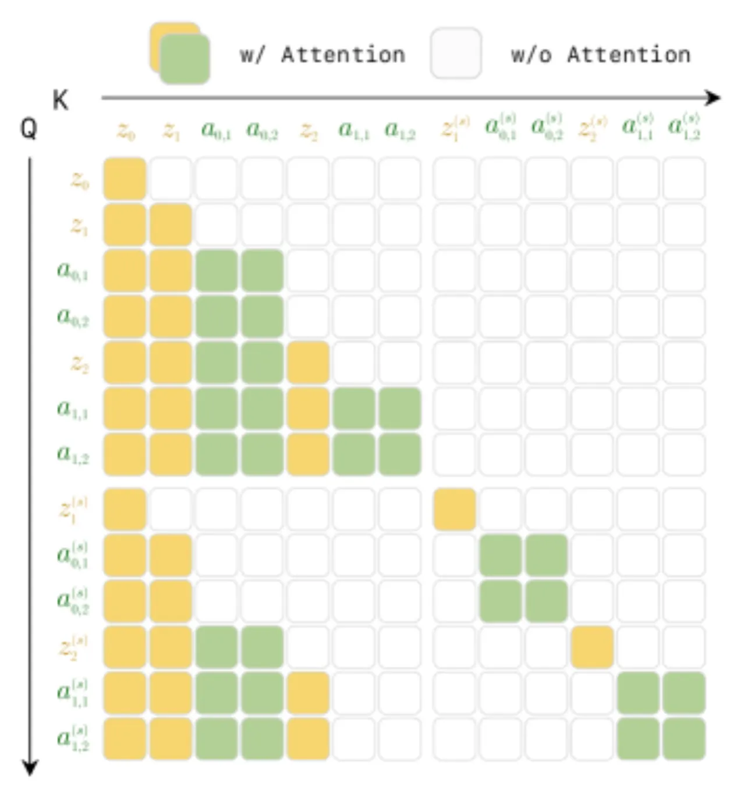
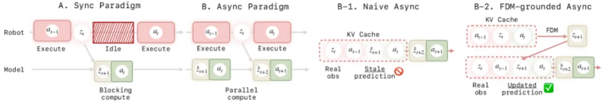
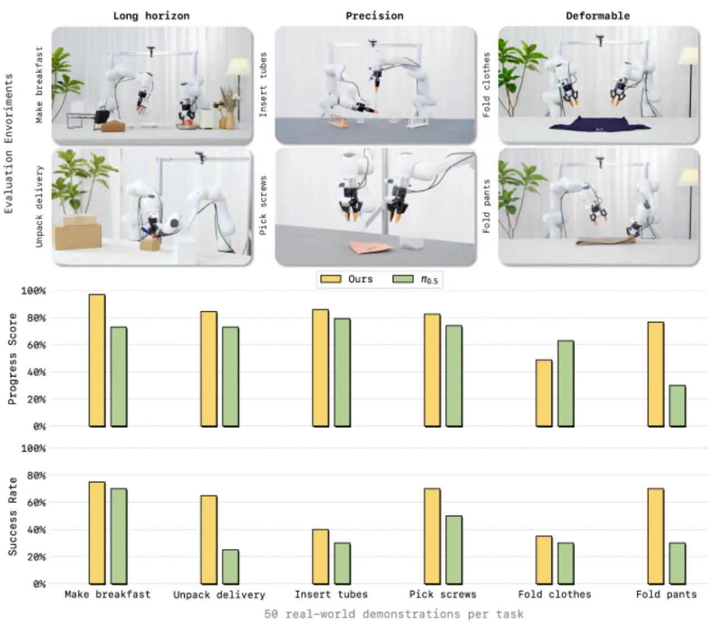
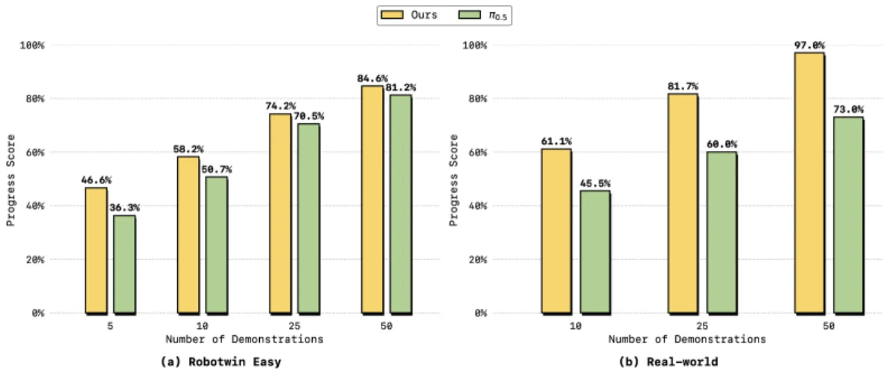
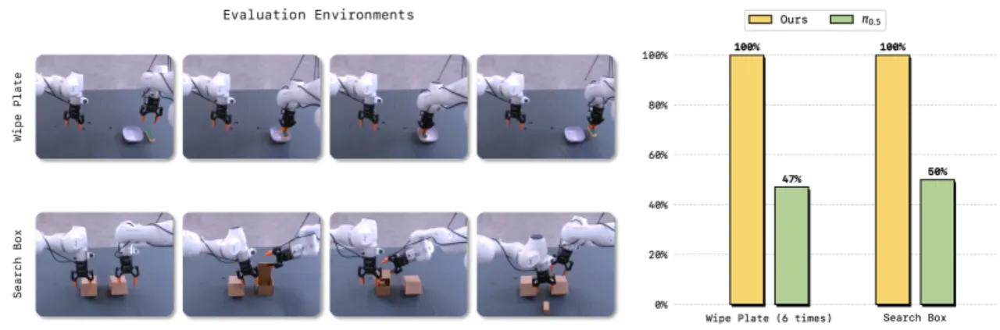

LingBot-VA 是一个自回归扩散框架，将视频帧预测（visual dynamics）与策略执行（policy execution）在统一的因果序列中联合建模，通过 KV-cache 保留完整历史上下文，在长时域操作、样本效率和泛化能力三个维度上全面超越现有 VLA 方法。
现有 Vision-Language-Action（VLA）策略直接从当前观测映射到动作，缺乏对物理世界动态的显式建模，导致长时域任务中容易遗忘历史、分布外泛化脆弱。这篇工作的核心主张是：
"Video world modeling, alongside vision-language pre-training, establishes a fresh and independent foundation for robot learning."
传统 VLA 学习的是直接映射 π(action|observation)，而 LingBot-VA 将其分解为两个步骤：先通过视觉动态预测 p(ot+1|o≤t) 生成下一帧，再通过逆动力学 g(at|ot, ot+1) 从相邻帧对推断动作。这一分解有三个关键优势：（1）保持对物理因果关系的显式约束；（2）通过 KV-cache 保留无限长历史，克服基于 chunk 方法的"短期记忆"问题；（3）大量互联网视频数据可直接用于预训练视觉动态模块。

LingBot-VA 将视频 token 与动作 token 交错排列成统一因果序列，由一个 Mixture-of-Transformers（MoT）架构以自回归方式联合预测，同时配备闭环滚动推理机制和异步推理流水线以实现实时执行。

视频帧通过因果 VAE 以 4×16×16 的时空压缩比编码为每帧 192 个 spatial token；动作通过轻量 MLP 映射到 token embedding，与视频 token 共享同一潜在空间。MoT 采用非对称容量设计：视频流 3072-dim，动作流 768-dim，两路通过 cross-modal attention 融合。统一的损失函数为：L = Ldyn + λ·Linv，其中 Ldyn 监督视频 token 的速度场（flow matching），Linv 以当前帧与下一帧为条件监督动作解码。

LingBot-VA 使用 Teacher Forcing 训练策略："Each token can only attend to preceding tokens in temporal sequence"，在强制因果一致性的同时实现高效的并行训练。训练时随机采样 chunk size K ∈ [1,8]，使得部署时可灵活权衡闭环修正频率与计算效率。另一关键技巧是 Noisy History Augmentation："During training, randomly augment video history with noise; enables partial denoising (s=0.5 instead of s=1.0) at inference, halving video generation steps."动作网络权重初始化采用视频权重插值并以 α=√(dv/da) 缩放，确保训练梯度平稳收敛。

部署阶段 KV-cache 将历史计算缓存，"Only new tokens require full attention computation; cached history tokens are reused"，显著降低推理延迟。为解决 Naive async 带来的开环退化问题，引入 Forward Dynamics Model（FDM）：模型利用最近的真实反馈想象施加动作后的视觉状态，强迫与环境观测重对齐后再向前预测。
使用 16K 小时数据，来自 6 个来源（Agibot、RoboMind、InternData-A1、OXE、UMI、RoboCOIN）聚合。模型规模：5.3B 参数（Wan2.2-5B 视频主干 + 350M 动作流）。预训练：1.4T tokens，AdamW（lr=1×10⁻⁴，bfloat16 精度）。后训练：50 个任务演示，3K steps，lr=1×10⁻⁵。
LingBot-VA 在三类基准上评估：RoboTwin 2.0（50 个双臂仿真任务，Easy / Hard），LIBERO（4 个子集），以及 6 个真实世界操作任务（长时域 / 精细操作 / 可变形物体）。
| 指标 | X-VLA* | π₀ | π₀.₅ | Motus | LingBot-VA (Ours) |
|---|---|---|---|---|---|
| Easy Avg (50 tasks) | 72.9 | 65.9 | 82.7 | 88.7 | 92.93 (+4.2) |
| Hard Avg (50 tasks) | 72.8 | 58.4 | 76.8 | 87.0 | 91.55 (+4.6) |
| Easy Horizon=1 | 81.6 | 66.5 | 85.1 | 91.0 | 94.18 (+3.2) |
| Hard Horizon=1 | 82.5 | 61.6 | 80.2 | 90.6 | 93.56 (+3.0) |
| Easy Horizon=2 | 59.3 | 66.1 | 79.3 | 85.2 | 90.35 (+5.2) |
| Hard Horizon=2 | 55.9 | 54.7 | 73.0 | 80.9 | 86.95 (+6.1) |
| Easy Horizon=3 | 61.2 | 61.6 | 78.6 | 85.0 | 93.22 (+8.2) |
| Hard Horizon=3 | 66.0 | 50.2 | 67.4 | 84.2 | 93.28 (+9.1) |
注意：随 Horizon 增大，LingBot-VA 的优势进一步扩大（Horizon=3 时领先 +8.2% / +9.1%），印证了 KV-cache 长时记忆在多步任务中的核心价值。
| 方法 | LIBERO-Spatial | LIBERO-Object | LIBERO-Goal | LIBERO-Long | 平均 |
|---|---|---|---|---|---|
| Octo | 78.9 | 85.7 | 84.6 | 51.1 | 75.1 |
| SmolVLA | 93.0 | 94.0 | 91.0 | 77.0 | 88.8 |
| π₀ | 96.8 | 98.8 | 95.8 | 85.2 | 94.1 |
| X-VLA | 98.2 | 98.6 | 97.8 | 97.6 | 98.1 |
| LingBot-VA (Ours) | 98.5±0.3 | 99.6±0.3 | 97.2±0.2 | 98.5±0.5 | 98.5 |



| 消融维度 | 设置 | Easy_all | Horizon=1 | Horizon=2 | Horizon=3 |
|---|---|---|---|---|---|
| 基准 | LingBot-VA (Ours) | 92.9 | 94.2 | 90.4 | 93.2 |
| 部署策略 | FDM-grounded Async | 90.4 | 92.5 | 87.7 | 85.6 |
| Naive Async | 74.3 | 83.3 | 70.3 | 32.9 | |
| 预训练主干 | WAN (无因果世界建模) | 80.6 | 84.9 | 76.3 | 67.6 |
消融结果清晰表明：Naive async 在 Horizon=3 时性能崩溃至 32.9%，而 FDM grounding 将其恢复至 85.6%；替换为普通 WAN 主干则损失 12.3 个百分点，证明因果世界建模预训练是核心贡献。
论文明确指出："Video token generation remains computationally intensive"。自回归逐帧生成在部署时仍有较高延迟，即使通过异步流水线和 partial denoising 已显著缓解，实时性仍弱于直接动作回归方法。
论文明确指出当前版本为"implicit rather than explicit contact dynamics modeling"，对需要精确力/力矩控制的精细操作（如拧螺丝）可能存在上限。
（推断）LingBot-VA 将动作统一为 30 维向量（双臂：7 EEF + 7 关节 + 1 夹爪，每臂），依赖于机器人形态一致性假设。对于腿式机器人、多指手等不同形态，需重新定义动作表示，框架的跨形态泛化能力尚未验证。
论文将"multi-modal sensory inputs (tactile, force, audio) for robust manipulation"列为未来工作方向，当前系统仅依赖视觉输入，对无视觉线索的操作任务（如在遮挡下搜索）能力有限。